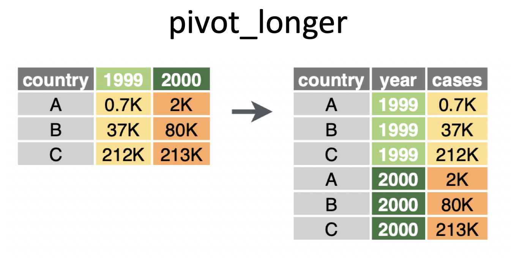
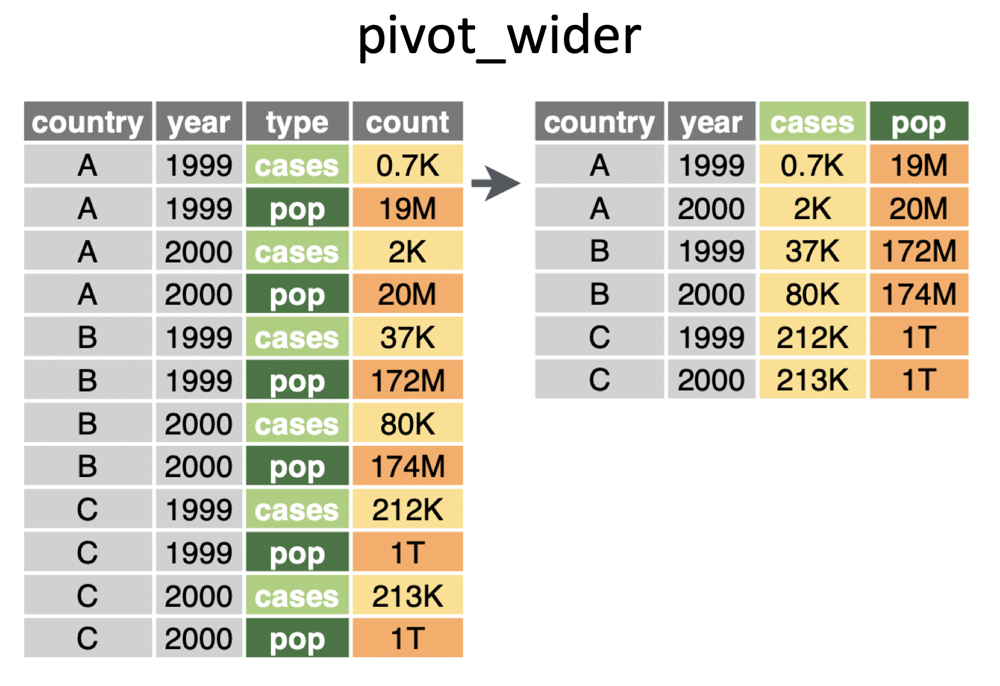
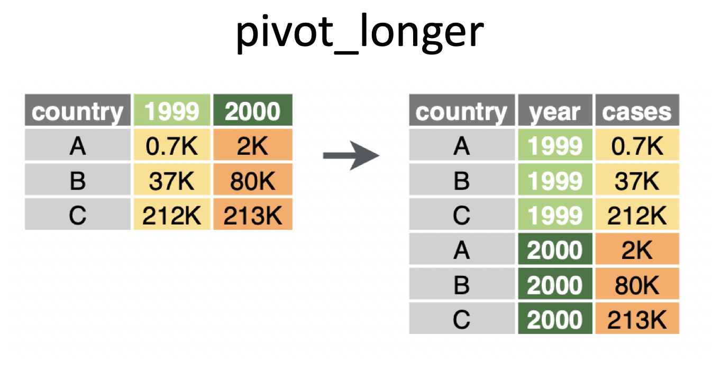
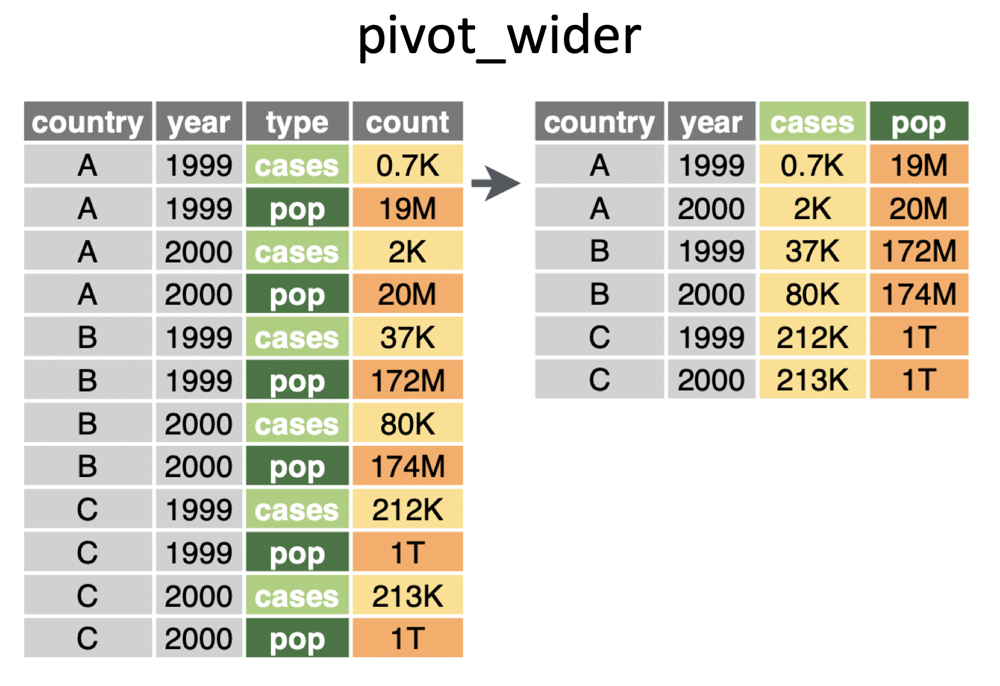

September 18 + 23, 2024
pivotingimage credit: https://www.garrickadenbuie.com/project/tidyexplain/
pivot_longer() makes the data frame “longer” – many columns into a few columns (more rows):pivot_longer(data,cols,names_to=,value_to=)
pivot_wider() makes the data frame “wider” – a few columns into many columns (fewer rows):pivot_wider(data,names_from=,values_from=)


pivot_longerpivot_longer will be demonstrated using datasets from GapMinder.
litF represents country, year, and female literacy rate.
library(googlesheets4)
gs4_deauth()
litF <- read_sheet("https://docs.google.com/spreadsheets/d/1hDinTIRHQIaZg1RUn6Z_6mo12PtKwEPFIz_mJVF6P5I/pub?gid=0")
litF# A tibble: 260 × 38
Adult (15+) literacy rate …¹ `1975` `1976` `1977` `1978` `1979` `1980` `1981`
<chr> <dbl> <dbl> <dbl> <dbl> <dbl> <dbl> <dbl>
1 Afghanistan NA NA NA NA 4.99 NA NA
2 Albania NA NA NA NA NA NA NA
3 Algeria NA NA NA NA NA NA NA
4 Andorra NA NA NA NA NA NA NA
5 Angola NA NA NA NA NA NA NA
6 Anguilla NA NA NA NA NA NA NA
7 Antigua and Barbuda NA NA NA NA NA NA NA
8 Argentina NA NA NA NA NA 93.6 NA
9 Armenia NA NA NA NA NA NA NA
10 Aruba NA NA NA NA NA NA NA
# ℹ 250 more rows
# ℹ abbreviated name: ¹`Adult (15+) literacy rate (%). Female`
# ℹ 30 more variables: `1982` <dbl>, `1983` <dbl>, `1984` <dbl>, `1985` <dbl>,
# `1986` <dbl>, `1987` <dbl>, `1988` <dbl>, `1989` <dbl>, `1990` <dbl>,
# `1991` <dbl>, `1992` <dbl>, `1993` <dbl>, `1994` <dbl>, `1995` <dbl>,
# `1996` <dbl>, `1997` <dbl>, `1998` <dbl>, `1999` <dbl>, `2000` <dbl>,
# `2001` <dbl>, `2002` <dbl>, `2003` <dbl>, `2004` <dbl>, `2005` <dbl>, …pivot_longerlitF <- litF |>
select(country = starts_with("Adult"), everything()) |>
pivot_longer(cols = -country,
names_to = "year",
values_to = "litRateF") |>
filter(!is.na(litRateF))
litF# A tibble: 571 × 3
country year litRateF
<chr> <chr> <dbl>
1 Afghanistan 1979 4.99
2 Afghanistan 2011 13
3 Albania 2001 98.3
4 Albania 2008 94.7
5 Albania 2011 95.7
6 Algeria 1987 35.8
7 Algeria 2002 60.1
8 Algeria 2006 63.9
9 Angola 2001 54.2
10 Angola 2011 58.6
# ℹ 561 more rowspivot_longerGDP represents country, year, and gdp (in fixed 2000 US$).
GDP <- read_sheet("https://docs.google.com/spreadsheets/d/1RctTQmKB0hzbm1E8rGcufYdMshRdhmYdeL29nXqmvsc/pub?gid=0")
GDP <- GDP |>
select(country = starts_with("Income"), everything()) |>
pivot_longer(cols = -country,
names_to = "year",
values_to = "gdp") |>
filter(!is.na(gdp))
GDP# A tibble: 7,988 × 3
country year gdp
<chr> <chr> <dbl>
1 Albania 1980 1061.
2 Albania 1981 1100.
3 Albania 1982 1111.
4 Albania 1983 1101.
5 Albania 1984 1065.
6 Albania 1985 1060.
7 Albania 1986 1092.
8 Albania 1987 1054.
9 Albania 1988 1014.
10 Albania 1989 1092.
# ℹ 7,978 more rowspivot_widerpivot_wider will be demonstrated using the babynames dataset.
# A tibble: 1,924,665 × 5
year sex name n prop
<dbl> <chr> <chr> <int> <dbl>
1 1880 F Mary 7065 0.0724
2 1880 F Anna 2604 0.0267
3 1880 F Emma 2003 0.0205
4 1880 F Elizabeth 1939 0.0199
5 1880 F Minnie 1746 0.0179
6 1880 F Margaret 1578 0.0162
7 1880 F Ida 1472 0.0151
8 1880 F Alice 1414 0.0145
9 1880 F Bertha 1320 0.0135
10 1880 F Sarah 1288 0.0132
# ℹ 1,924,655 more rowspivot_wider babynames# A tibble: 1,756,284 × 4
year name F M
<dbl> <chr> <int> <int>
1 1880 Mary 7065 27
2 1880 Anna 2604 12
3 1880 Emma 2003 10
4 1880 Elizabeth 1939 9
5 1880 Minnie 1746 9
6 1880 Margaret 1578 NA
7 1880 Ida 1472 8
8 1880 Alice 1414 NA
9 1880 Bertha 1320 NA
10 1880 Sarah 1288 NA
# ℹ 1,756,274 more rowspivot_wider babynamesbabynames |>
select(-prop) |>
pivot_wider(names_from = sex, values_from = n) |>
filter(!is.na(F), !is.na(M)) |>
arrange(desc(year), desc(F))# A tibble: 168,381 × 4
year name F M
<dbl> <chr> <int> <int>
1 2017 Emma 19738 14
2 2017 Olivia 18632 10
3 2017 Ava 15902 12
4 2017 Isabella 15100 12
5 2017 Sophia 14831 17
6 2017 Mia 13437 16
7 2017 Charlotte 12893 7
8 2017 Amelia 11800 11
9 2017 Evelyn 10675 11
10 2017 Abigail 10551 6
# ℹ 168,371 more rowspivot_wider babynamesbabynames |>
pivot_wider(names_from = sex, values_from = n) |>
mutate(maxcount = pmax(F, M, na.rm = TRUE)) |>
arrange(desc(maxcount))# A tibble: 1,924,653 × 6
year name prop F M maxcount
<dbl> <chr> <dbl> <int> <int> <int>
1 1947 Linda 0.0548 99686 NA 99686
2 1948 Linda 0.0552 96209 NA 96209
3 1947 James 0.0510 NA 94756 94756
4 1957 Michael 0.0424 NA 92695 92695
5 1947 Robert 0.0493 NA 91642 91642
6 1949 Linda 0.0518 91016 NA 91016
7 1956 Michael 0.0423 NA 90620 90620
8 1958 Michael 0.0420 NA 90520 90520
9 1948 James 0.0497 NA 88588 88588
10 1954 Michael 0.0428 NA 88514 88514
# ℹ 1,924,643 more rowsSee the Posit cheatsheets on wrangling & joining and pivoting.
left_join returns all rows from the left table, and any rows with matching keys from the right table.inner_join returns only the rows in which the left table have matching keys in the right table (i.e., matching rows in both sets).full_join returns all rows from both tables, join records from the left which have matching keys in the right table.Good practice: always specify the by argument when joining data frames.
10 women in science who changed the world (source: Discover Magazine)1
| name | profession |
|---|---|
| Ada Lovelace | Mathematician |
| Marie Curie | Physicist and Chemist |
| Janaki Ammal | Botanist |
| Chien-Shiung Wu | Physicist |
| Katherine Johnson | Mathematician |
| Rosalind Franklin | Chemist |
| Vera Rubin | Astronomer |
| Gladys West | Mathematician |
| Flossie Wong-Staal | Virologist and Molecular Biologist |
| Jennifer Doudna | Biochemist |
# A tibble: 10 × 2
name profession
<chr> <chr>
1 Ada Lovelace Mathematician
2 Marie Curie Physicist and Chemist
3 Janaki Ammal Botanist
4 Chien-Shiung Wu Physicist
5 Katherine Johnson Mathematician
6 Rosalind Franklin Chemist
7 Vera Rubin Astronomer
8 Gladys West Mathematician
9 Flossie Wong-Staal Virologist and Molecular Biologist
10 Jennifer Doudna Biochemist # A tibble: 9 × 2
name known_for
<chr> <chr>
1 Ada Lovelace first computer algorithm
2 Marie Curie theory of radioactivity, discovery of elements polonium a…
3 Janaki Ammal hybrid species, biodiversity protection
4 Chien-Shiung Wu confim and refine theory of radioactive beta decy, Wu expe…
5 Katherine Johnson calculations of orbital mechanics critical to sending the …
6 Vera Rubin existence of dark matter
7 Gladys West mathematical modeling of the shape of the Earth which serv…
8 Flossie Wong-Staal first scientist to clone HIV and create a map of its genes…
9 Jennifer Doudna one of the primary developers of CRISPR, a ground-breaking…We’d like to put together the data to look like:
# A tibble: 10 × 5
name profession birth_year death_year known_for
<chr> <chr> <dbl> <dbl> <chr>
1 Ada Lovelace Mathematician NA NA first co…
2 Marie Curie Physicist and Chemist NA NA theory o…
3 Janaki Ammal Botanist 1897 1984 hybrid s…
4 Chien-Shiung Wu Physicist 1912 1997 confim a…
5 Katherine Johnson Mathematician 1918 2020 calculat…
6 Rosalind Franklin Chemist 1920 1958 <NA>
7 Vera Rubin Astronomer 1928 2016 existenc…
8 Gladys West Mathematician 1930 NA mathemat…
9 Flossie Wong-Staal Virologist and Molecular … 1947 2020 first sc…
10 Jennifer Doudna Biochemist 1964 NA one of t…For the next few slides…
left_join()left_join()# A tibble: 10 × 4
name profession birth_year death_year
<chr> <chr> <dbl> <dbl>
1 Ada Lovelace Mathematician NA NA
2 Marie Curie Physicist and Chemist NA NA
3 Janaki Ammal Botanist 1897 1984
4 Chien-Shiung Wu Physicist 1912 1997
5 Katherine Johnson Mathematician 1918 2020
6 Rosalind Franklin Chemist 1920 1958
7 Vera Rubin Astronomer 1928 2016
8 Gladys West Mathematician 1930 NA
9 Flossie Wong-Staal Virologist and Molecular Biologist 1947 2020
10 Jennifer Doudna Biochemist 1964 NAright_join()right_join()# A tibble: 8 × 4
name profession birth_year death_year
<chr> <chr> <dbl> <dbl>
1 Janaki Ammal Botanist 1897 1984
2 Chien-Shiung Wu Physicist 1912 1997
3 Katherine Johnson Mathematician 1918 2020
4 Rosalind Franklin Chemist 1920 1958
5 Vera Rubin Astronomer 1928 2016
6 Gladys West Mathematician 1930 NA
7 Flossie Wong-Staal Virologist and Molecular Biologist 1947 2020
8 Jennifer Doudna Biochemist 1964 NAfull_join()full_join()# A tibble: 10 × 4
name birth_year death_year known_for
<chr> <dbl> <dbl> <chr>
1 Janaki Ammal 1897 1984 hybrid species, biodiversity protec…
2 Chien-Shiung Wu 1912 1997 confim and refine theory of radioac…
3 Katherine Johnson 1918 2020 calculations of orbital mechanics c…
4 Rosalind Franklin 1920 1958 <NA>
5 Vera Rubin 1928 2016 existence of dark matter
6 Gladys West 1930 NA mathematical modeling of the shape …
7 Flossie Wong-Staal 1947 2020 first scientist to clone HIV and cr…
8 Jennifer Doudna 1964 NA one of the primary developers of CR…
9 Ada Lovelace NA NA first computer algorithm
10 Marie Curie NA NA theory of radioactivity, discovery…inner_join()inner_join()# A tibble: 7 × 4
name birth_year death_year known_for
<chr> <dbl> <dbl> <chr>
1 Janaki Ammal 1897 1984 hybrid species, biodiversity protect…
2 Chien-Shiung Wu 1912 1997 confim and refine theory of radioact…
3 Katherine Johnson 1918 2020 calculations of orbital mechanics cr…
4 Vera Rubin 1928 2016 existence of dark matter
5 Gladys West 1930 NA mathematical modeling of the shape o…
6 Flossie Wong-Staal 1947 2020 first scientist to clone HIV and cre…
7 Jennifer Doudna 1964 NA one of the primary developers of CRI…semi_join()semi_join()anti_join()anti_join()# A tibble: 10 × 5
name profession birth_year death_year known_for
<chr> <chr> <dbl> <dbl> <chr>
1 Ada Lovelace Mathematician NA NA first co…
2 Marie Curie Physicist and Chemist NA NA theory o…
3 Janaki Ammal Botanist 1897 1984 hybrid s…
4 Chien-Shiung Wu Physicist 1912 1997 confim a…
5 Katherine Johnson Mathematician 1918 2020 calculat…
6 Rosalind Franklin Chemist 1920 1958 <NA>
7 Vera Rubin Astronomer 1928 2016 existenc…
8 Gladys West Mathematician 1930 NA mathemat…
9 Flossie Wong-Staal Virologist and Molecular … 1947 2020 first sc…
10 Jennifer Doudna Biochemist 1964 NA one of t…litF and GDP from Gapminder.[1] 571 4# A tibble: 571 × 4
country year litRateF gdp
<chr> <chr> <dbl> <dbl>
1 Afghanistan 1979 4.99 NA
2 Afghanistan 2011 13 NA
3 Albania 2001 98.3 1282.
4 Albania 2008 94.7 1804.
5 Albania 2011 95.7 1966.
6 Algeria 1987 35.8 1902.
7 Algeria 2002 60.1 1872.
8 Algeria 2006 63.9 2125.
9 Angola 2001 54.2 298.
10 Angola 2011 58.6 630.
# ℹ 561 more rows[1] 7988 4# A tibble: 7,988 × 4
country year litRateF gdp
<chr> <chr> <dbl> <dbl>
1 Albania 2001 98.3 1282.
2 Albania 2008 94.7 1804.
3 Albania 2011 95.7 1966.
4 Algeria 1987 35.8 1902.
5 Algeria 2002 60.1 1872.
6 Algeria 2006 63.9 2125.
7 Angola 2001 54.2 298.
8 Angola 2011 58.6 630.
9 Antigua and Barbuda 2001 99.4 9640.
10 Antigua and Barbuda 2011 99.4 9978.
# ℹ 7,978 more rows[1] 505 4# A tibble: 505 × 4
country year litRateF gdp
<chr> <chr> <dbl> <dbl>
1 Albania 2001 98.3 1282.
2 Albania 2008 94.7 1804.
3 Albania 2011 95.7 1966.
4 Algeria 1987 35.8 1902.
5 Algeria 2002 60.1 1872.
6 Algeria 2006 63.9 2125.
7 Angola 2001 54.2 298.
8 Angola 2011 58.6 630.
9 Antigua and Barbuda 2001 99.4 9640.
10 Antigua and Barbuda 2011 99.4 9978.
# ℹ 495 more rows[1] 8054 4# A tibble: 8,054 × 4
country year litRateF gdp
<chr> <chr> <dbl> <dbl>
1 Afghanistan 1979 4.99 NA
2 Afghanistan 2011 13 NA
3 Albania 2001 98.3 1282.
4 Albania 2008 94.7 1804.
5 Albania 2011 95.7 1966.
6 Algeria 1987 35.8 1902.
7 Algeria 2002 60.1 1872.
8 Algeria 2006 63.9 2125.
9 Angola 2001 54.2 298.
10 Angola 2011 58.6 630.
# ℹ 8,044 more rowsjoin to merge two datasetsIf you ever need to understand which join is the right join for you, try to find an image that will lay out what the function is doing. I found this one that is quite good and is taken from the Statistics Globe blog.